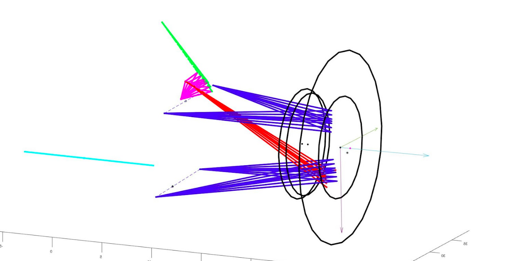
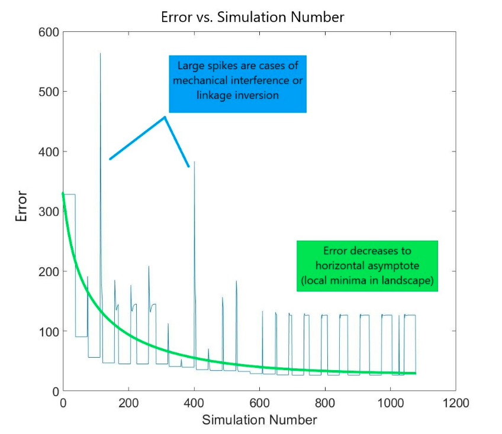

 This is what the suspension model looks like in Matlab after sweeping through shock displacements!
Background and Introduction
I created this tool in order to automate a lot of the suspension packaging and design process for my FSAE team. In FSAE, there are a large set of rules and restrictions that are placed on the design on the chassis. These restrictions, especially those pertaining to space frames, greatly limit possibilities for suspension design. Certain tubes and nodes of the chassis must be located in certain areas, and must conform to certain configuration rules. This restricts the areas where suspension members can be mounted, and thus restricts the geometry and characteristics of the suspension. Beyond rules restrictions, other subsystems on the car also influence chassis geometry, which further constrains the problem.
It turns out that designing a suspension system that possess the desired characteristics, but also is able to be elegantly packaged with the rest of the chassis is a very difficult and tedious process. Poor packaging can lead to lots of compliance in the suspension system, making the vehicle much harder to handle. This tool automates away this process, and automatically generates candidate suspension designs that have desirable characteristics, but follow packaging constraints.
This tool’s goal is to generate suspension designs that are viable and good.
Viable designs:
- Respect rule imposed restrictions (ex: minimum vertical wheel travel)
- Respect packaging constraints for suspension mount points
- Avoid mechanical interference between components
- Avoid linkage inversion
Good designs:
- Contain characteristics that closely match desired/”ideal” ones
- Follow good design principles (ex: avoid designs that put components into bending)
Caveats
This isn’t a magical tool. It requires quite a lot of vehicle engineering knowledge to be used correctly. In order to get decent results, the user must define allowable regions for mounting, must define the desired characteristics, and define weights that describe how important each characteristic is relative to the others. Even then, the suspension design that’s returned is only a candidate. Additional nuanced analysis of the system is required for success.
Impact
This project saved the team around 60-70 hours of design time. Unexpected chassis changes were incredibly easy to adapt to. Additionally, because the tool is able to quickly simulate the motion profile of a given suspension and measure associated characteristics, we were able to use the tool to do a parameter sensitivity study to better determine welding location tolerances. Having informed knowledge on what location coordinates were most important allowed us to design better and more effective jigging for welding.
In the future, this tool can be integrated into a larger lap time simulation in order to capture the dynamic response of the suspension system as the car progresses through the simulated track.
How it works
I modeled every suspension component as a Matlab object. Each component was completely rigid, as this was a purely geometric simulation. Each component had an effective joint that dictated how it was joined with other components. Joints could either be spherical joints with three rotational DOFs, or cylindrical joints with one rotational DOF.
Once all of the components are initialized and joined to the right neighbors, motion inputs are given (shock displacement or steering input), and the resulting locations and orientations of the components is calculated. Based on the range of orientations, I can calculate associated characteristics such as bump steer, or the roll center location.
After calculating the characteristics, I compare them to the set of desired characteristics through a weighted sum. That scalar value is fed into a fmincon(), matlab’s constrained optimization solver. I convert the output of the solver into a new suspension geometry which is subsequently simulated, evaluated, and fed back into the optimizer. When a decent local minimum is found, the candidate design is returned.

This problem is one of around 36 independent variables, so the state space is really really really complex. Finding a global minimum is really difficult (duh), and the quality of the final solution found by fmincon() is heavily dependent on initial conditions. Because the simulation is optimized for speed, I’m able to completely ‘reseed’ the suspension geometry by randomly shuffling around the component node locations and rerunning the optimizer. This means that I can run the optimizer on a wide range of evenly sampled initial conditions to find out which ones are the most desirable.